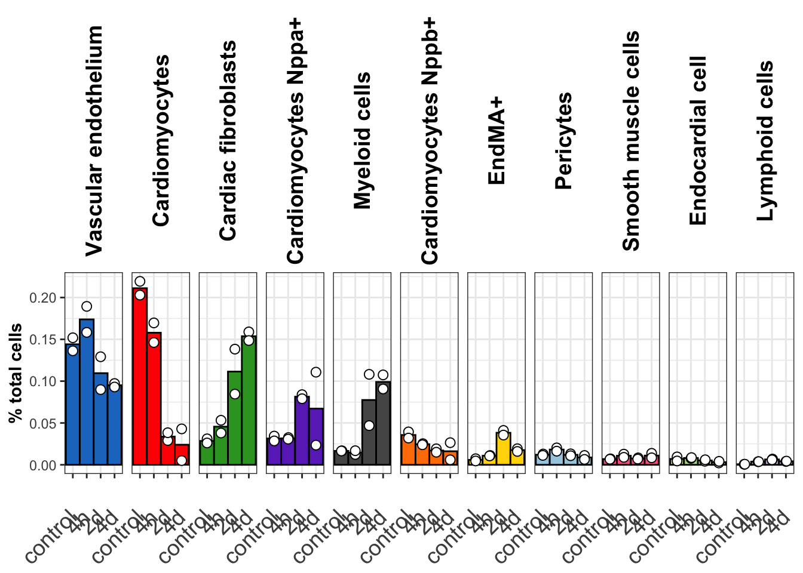
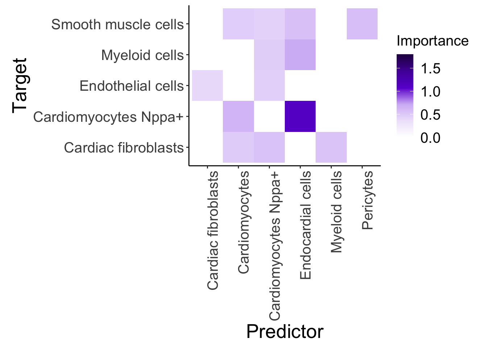
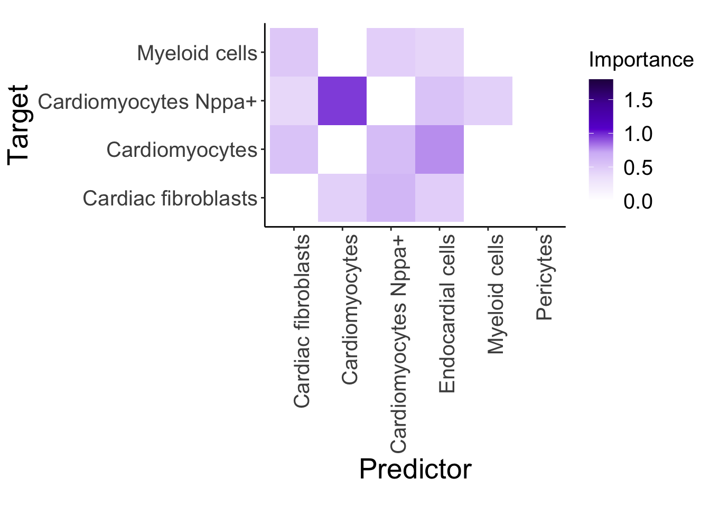
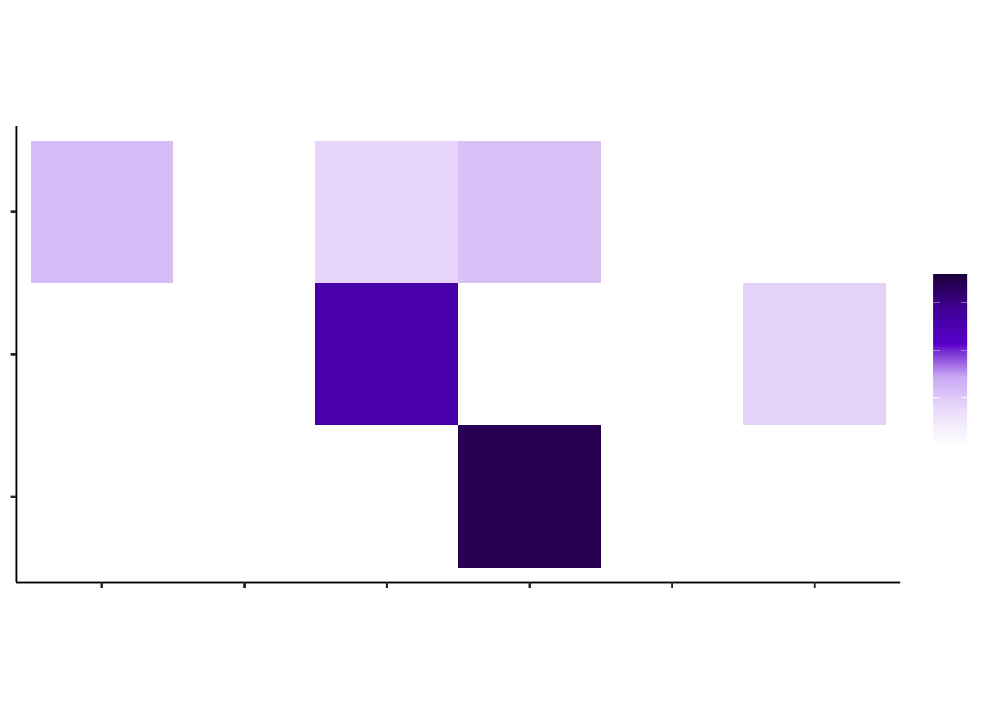
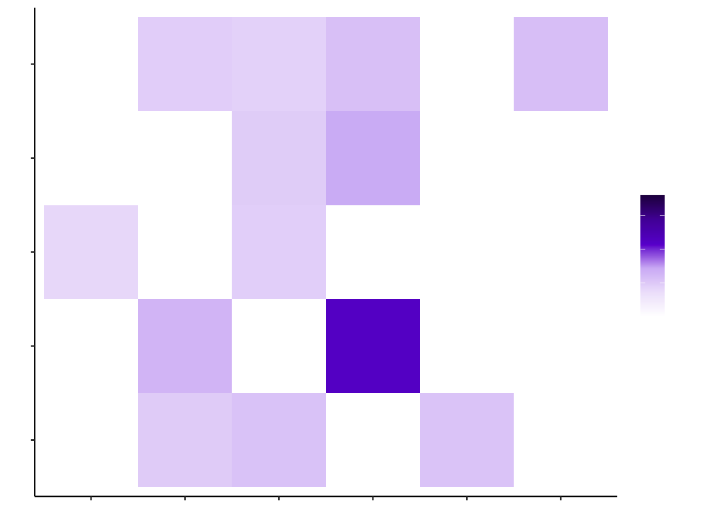

Figure 2
Florian Wuennemann
2023-09-01
Last updated: 2024-03-21
Checks: 7 0
Knit directory: mi_spatialomics/
This reproducible R Markdown analysis was created with workflowr (version 1.7.1). The Checks tab describes the reproducibility checks that were applied when the results were created. The Past versions tab lists the development history.
Great! Since the R Markdown file has been committed to the Git repository, you know the exact version of the code that produced these results.
Great job! The global environment was empty. Objects defined in the global environment can affect the analysis in your R Markdown file in unknown ways. For reproduciblity it’s best to always run the code in an empty environment.
The command set.seed(20230612) was run prior to running
the code in the R Markdown file. Setting a seed ensures that any results
that rely on randomness, e.g. subsampling or permutations, are
reproducible.
Great job! Recording the operating system, R version, and package versions is critical for reproducibility.
Nice! There were no cached chunks for this analysis, so you can be confident that you successfully produced the results during this run.
Great job! Using relative paths to the files within your workflowr project makes it easier to run your code on other machines.
Great! You are using Git for version control. Tracking code development and connecting the code version to the results is critical for reproducibility.
The results in this page were generated with repository version e6213a5. See the Past versions tab to see a history of the changes made to the R Markdown and HTML files.
Note that you need to be careful to ensure that all relevant files for
the analysis have been committed to Git prior to generating the results
(you can use wflow_publish or
wflow_git_commit). workflowr only checks the R Markdown
file, but you know if there are other scripts or data files that it
depends on. Below is the status of the Git repository when the results
were generated:
Ignored files:
Ignored: .DS_Store
Ignored: .Rproj.user/
Ignored: analysis/.DS_Store
Ignored: analysis/deprecated/.DS_Store
Ignored: analysis/molecular_cartography_python/.DS_Store
Ignored: analysis/seqIF_python/.DS_Store
Ignored: analysis/seqIF_python/pixie/.DS_Store
Ignored: analysis/seqIF_python/pixie/cell_clustering/
Ignored: annotations/.DS_Store
Ignored: annotations/SeqIF/.DS_Store
Ignored: annotations/molkart/.DS_Store
Ignored: annotations/molkart/Figure1_regions/.DS_Store
Ignored: annotations/molkart/Supplementary_Figure4_regions/.DS_Store
Ignored: data/.DS_Store
Ignored: data/140623.calcagno_et_al.seurat_object.rds
Ignored: data/Calcagno2022_int_logNorm_annot.h5Seurat
Ignored: data/IC_03_IF_CCR2_CD68 cell numbers.xlsx
Ignored: data/Traditional_IF_absolute_cell_counts.csv
Ignored: data/Traditional_IF_relative_cell_counts.csv
Ignored: data/pixie.cell_table_size_normalized_cell_labels.csv
Ignored: data/results_cts_100.sqm
Ignored: data/seqIF_regions_annotations/
Ignored: data/seurat/
Ignored: output/.DS_Store
Ignored: output/mol_cart.harmony_object.h5Seurat
Ignored: output/molkart/
Ignored: output/proteomics/
Ignored: output/results_cts.lowres.125.sqm
Ignored: output/seqIF/
Ignored: pipeline_configs/.DS_Store
Ignored: plots/
Ignored: references/.DS_Store
Ignored: renv/.DS_Store
Ignored: renv/library/
Ignored: renv/staging/
Untracked files:
Untracked: analysis/deprecated/figures.supplementary_figureX.Rmd
Untracked: analysis/deprecated/figures.supplementary_figure_X.MistyR.Rmd
Unstaged changes:
Deleted: analysis/figures.supplementary_figureX.Rmd
Deleted: analysis/figures.supplementary_figure_X.MistyR.Rmd
Deleted: analysis/figures.supplementary_figure_X.proteomics_qc.Rmd
Deleted: figures/Figure_5.eps
Deleted: figures/Figure_5.pdf
Deleted: figures/Figure_5.png
Deleted: figures/Figure_5.svg
Deleted: figures/Supplementary_Figure_1_Molecular_Cartography_ROIs.png
Deleted: figures/Supplementary_figure_5.segmentation_metrics.poster.eps
Modified: figures/Supplementary_figure_X.proteomics.eps
Modified: figures/Supplementary_figure_X.proteomics.png
Deleted: results_cts.lowres.125.sqm
Note that any generated files, e.g. HTML, png, CSS, etc., are not included in this status report because it is ok for generated content to have uncommitted changes.
These are the previous versions of the repository in which changes were
made to the R Markdown (analysis/figures.Figure2.Rmd) and
HTML (docs/figures.Figure2.html) files. If you’ve
configured a remote Git repository (see ?wflow_git_remote),
click on the hyperlinks in the table below to view the files as they
were in that past version.
| File | Version | Author | Date | Message |
|---|---|---|---|---|
| Rmd | 56559c7 | FloWuenne | 2024-03-21 | Cleaned up repository. |
| Rmd | a49803c | FloWuenne | 2024-02-29 | Updated a number of figures. |
| Rmd | af64c40 | FloWuenne | 2024-01-30 | Updated analysis for Figure 1 and 2. |
| Rmd | 82f107f | FloWuenne | 2024-01-21 | Updates to Molkart analysis. |
| html | b267494 | FloWuenne | 2023-12-06 | Build site. |
| Rmd | 2dcd178 | FloWuenne | 2023-12-06 | wflow_publish("*") |
| html | 2dcd178 | FloWuenne | 2023-12-06 | wflow_publish("*") |
| Rmd | 5dee03d | FloWuenne | 2023-09-04 | Latest code update. |
library(Seurat)Loading required package: SeuratObjectLoading required package: sp'SeuratObject' was built with package 'Matrix' 1.6.3 but the current
version is 1.6.5; it is recomended that you reinstall 'SeuratObject' as
the ABI for 'Matrix' may have changed
Attaching package: 'SeuratObject'The following object is masked from 'package:base':
intersect#options(Seurat.object.assay.version = 'v5')
library(tidyverse)── Attaching core tidyverse packages ──────────────────────── tidyverse 2.0.0 ──
✔ dplyr 1.1.4 ✔ readr 2.1.5
✔ forcats 1.0.0 ✔ stringr 1.5.1
✔ ggplot2 3.4.4 ✔ tibble 3.2.1
✔ lubridate 1.9.3 ✔ tidyr 1.3.0
✔ purrr 1.0.2 ── Conflicts ────────────────────────────────────────── tidyverse_conflicts() ──
✖ dplyr::filter() masks stats::filter()
✖ dplyr::lag() masks stats::lag()
ℹ Use the conflicted package (<http://conflicted.r-lib.org/>) to force all conflicts to become errorslibrary(scales)
Attaching package: 'scales'
The following object is masked from 'package:purrr':
discard
The following object is masked from 'package:readr':
col_factorlibrary(pals)
library(patchwork)
library(mistyR)mistyR is able to run computationally intensive functions
in parallel. Please consider specifying a future::plan(). For example by running
future::plan(future::multisession) before calling mistyR functions.library(ClusterR)
library(future)
library(ggbeeswarm)
library(ggdark)
source("./code/functions.R")
Attaching package: 'cowplot'
The following object is masked from 'package:patchwork':
align_plots
The following object is masked from 'package:lubridate':
stamp
here() starts at /Users/florian_wuennemann/1_Projects/MI_project/mi_spatialomicsLoad data
misty.results.g <- readRDS("./output/molkart/misty_results.lowres.125.rds")Figure 2A,D,G : Plot Misty interaction matrix
With labels
## Misty plots with labels
plot_interaction_heatmap_custom <- function(misty.results, view, cutoff = 1,
trim = -Inf, trim.measure = c(
"gain.R2", "multi.R2", "intra.R2",
"gain.RMSE", "multi.RMSE", "intra.RMSE"
),
clean = FALSE) {
trim.measure.type <- match.arg(trim.measure)
assertthat::assert_that(("importances.aggregated" %in% names(misty.results)),
msg = "The provided result list is malformed. Consider using collect_results()."
)
assertthat::assert_that(("improvements.stats" %in% names(misty.results)),
msg = "The provided result list is malformed. Consider using collect_results()."
)
assertthat::assert_that((view %in%
(misty.results$importances.aggregated %>% dplyr::pull(view))),
msg = "The selected view cannot be found in the results table."
)
inv <- sign((stringr::str_detect(trim.measure.type, "gain") |
stringr::str_detect(trim.measure.type, "RMSE", negate = TRUE)) - 0.5)
targets <- misty.results$improvements.stats %>%
dplyr::filter(
measure == trim.measure.type,
inv * mean >= inv * trim
) %>%
dplyr::pull(target)
plot.data <- misty.results$importances.aggregated %>%
dplyr::filter(view == !!view, Target %in% targets)
if (clean) {
clean.predictors <- plot.data %>%
dplyr::mutate(Importance = Importance * (Importance >= cutoff)) %>%
dplyr::group_by(Predictor) %>%
dplyr::summarize(total = sum(Importance, na.rm = TRUE)) %>%
dplyr::filter(total > 0) %>%
dplyr::pull(Predictor)
clean.targets <- plot.data %>%
dplyr::mutate(Importance = Importance * (Importance >= cutoff)) %>%
dplyr::group_by(Target) %>%
dplyr::summarize(total = sum(Importance, na.rm = TRUE)) %>%
dplyr::filter(total > 0) %>%
dplyr::pull(Target)
plot.data.clean <- plot.data
# plot.data.clean <- plot.data %>%
# dplyr::filter(
# Predictor %in% clean.predictors,
# Target %in% clean.targets
# )
} else {
plot.data.clean <- plot.data
}
#set2.blue <- "#8DA0CB"
## Color roughly based on https://icolorpalette.com/color/080210
## Replace dots with spaces in cell type names
plot.data.clean$Predictor <- gsub("\\."," ",plot.data.clean$Predictor)
plot.data.clean$Target <- gsub("\\."," ",plot.data.clean$Target)
plot.data.clean$Predictor <- gsub("Cardiomyocytes Nppa ","Cardiomyocytes Nppa+",plot.data.clean$Predictor)
plot.data.clean$Target <- gsub("Cardiomyocytes Nppa ","Cardiomyocytes Nppa+",plot.data.clean$Target)
## Subset for only relevant Predictors
plot.data.clean <- subset(plot.data.clean,Predictor %in% c("Cardiomyocytes","Cardiomyocytes Nppa+","Endocardial cells",
"Cardiac fibroblasts","Pericytes","Myeloid cells"))
## Subset for only interactions above specified threshold
plot.data.clean <- plot.data.clean %>%
mutate("Importance" = ifelse(Importance < cutoff, 0, Importance))
## Plot data
results.plot <- ggplot2::ggplot(
plot.data.clean,
ggplot2::aes(
x = Predictor,
y = Target
)
) +
#ggplot2::geom_tile(data = subset(plot.data.clean, Importance > cutoff),ggplot2::aes(fill = Importance)) +
ggplot2::geom_tile(ggplot2::aes(fill = Importance)) +
ggplot2::scale_fill_gradientn(
colours = c("white", "#efe5fb", "#d3baf6", "#691ad2","#5314a6","#27094f"),
#values = scales::rescale(c(0, 0.5, 1, 1.2)),
limits = c(0,1.8)
) +
# ggplot2::scale_fill_gradient2(
# limits = c(0, max(plot.data.clean$Importance))
# ) +
ggplot2::theme_classic() +
ggplot2::theme(axis.title = ggplot2::element_text(size = 20),
axis.text.x = ggplot2::element_text(angle = 90, hjust = 1, size = 15),
axis.text.y = ggplot2::element_text(size = 15),
legend.title = ggplot2::element_text(size = 15),
legend.text = ggplot2::element_text(size = 15)) +
ggplot2::coord_equal()
#ggplot2::ggtitle(view)
return(results.plot)
#return(plot.data.clean)
invisible(misty.results)
}
## Now we will plot the interaction heatmap
control_misty <- plot_interaction_heatmap_custom(misty.results.g$control, "paraview", cutoff = 0.4, clean = TRUE, trim = 5)
control_misty
| Version | Author | Date |
|---|---|---|
| 2dcd178 | FloWuenne | 2023-12-06 |
save_plot(control_misty,
file = "./plots/Figure2.mistyR_control.with_labels.pdf",
base_height = 7)
d2_misty <- plot_interaction_heatmap_custom(misty.results.g$'2d', "paraview", cutoff = 0.4, clean = TRUE, trim = 5)
d2_misty
save_plot(d2_misty,
file = "./plots/Figure2.mistyR_d2.with_labels.pdf",
base_height = 5)
d4_misty <- plot_interaction_heatmap_custom(misty.results.g$'4d', "paraview", cutoff = 0.4, clean = TRUE, trim = 5)
d4_misty
save_plot(d4_misty,
file = "./plots/Figure2.mistyR_d4.with_labels.pdf",
base_height = 5)Without labels
## Misty figures without text for adding to Adobe
## Misty plots with labels
plot_interaction_heatmap_custom <- function(misty.results, view, cutoff = 1,
trim = -Inf, trim.measure = c(
"gain.R2", "multi.R2", "intra.R2",
"gain.RMSE", "multi.RMSE", "intra.RMSE"
),
clean = FALSE) {
trim.measure.type <- match.arg(trim.measure)
assertthat::assert_that(("importances.aggregated" %in% names(misty.results)),
msg = "The provided result list is malformed. Consider using collect_results()."
)
assertthat::assert_that(("improvements.stats" %in% names(misty.results)),
msg = "The provided result list is malformed. Consider using collect_results()."
)
assertthat::assert_that((view %in%
(misty.results$importances.aggregated %>% dplyr::pull(view))),
msg = "The selected view cannot be found in the results table."
)
inv <- sign((stringr::str_detect(trim.measure.type, "gain") |
stringr::str_detect(trim.measure.type, "RMSE", negate = TRUE)) - 0.5)
targets <- misty.results$improvements.stats %>%
dplyr::filter(
measure == trim.measure.type,
inv * mean >= inv * trim
) %>%
dplyr::pull(target)
plot.data <- misty.results$importances.aggregated %>%
dplyr::filter(view == !!view, Target %in% targets)
if (clean) {
clean.predictors <- plot.data %>%
dplyr::mutate(Importance = Importance * (Importance >= cutoff)) %>%
dplyr::group_by(Predictor) %>%
dplyr::summarize(total = sum(Importance, na.rm = TRUE)) %>%
dplyr::filter(total > 0) %>%
dplyr::pull(Predictor)
clean.targets <- plot.data %>%
dplyr::mutate(Importance = Importance * (Importance >= cutoff)) %>%
dplyr::group_by(Target) %>%
dplyr::summarize(total = sum(Importance, na.rm = TRUE)) %>%
dplyr::filter(total > 0) %>%
dplyr::pull(Target)
plot.data.clean <- plot.data
# plot.data.clean <- plot.data %>%
# dplyr::filter(
# Predictor %in% clean.predictors,
# Target %in% clean.targets
# )
} else {
plot.data.clean <- plot.data
}
#set2.blue <- "#8DA0CB"
## Color roughly based on https://icolorpalette.com/color/080210
## Replace dots with spaces in cell type names
plot.data.clean$Predictor <- gsub("\\."," ",plot.data.clean$Predictor)
plot.data.clean$Target <- gsub("\\."," ",plot.data.clean$Target)
plot.data.clean$Predictor <- gsub("Cardiomyocytes Nppa ","Cardiomyocytes Nppa+",plot.data.clean$Predictor)
plot.data.clean$Target <- gsub("Cardiomyocytes Nppa ","Cardiomyocytes Nppa+",plot.data.clean$Target)
## Subset for only relevant Predictors
plot.data.clean <- subset(plot.data.clean,Predictor %in% c("Cardiomyocytes","Cardiomyocytes Nppa+","Endocardial cells",
"Cardiac fibroblasts","Pericytes","Myeloid cells"))
## Subset for only interactions above specified threshold
plot.data.clean <- plot.data.clean %>%
mutate("Importance" = ifelse(Importance < cutoff, 0, Importance))
## Plot data
results.plot <- ggplot2::ggplot(
plot.data.clean,
ggplot2::aes(
x = Predictor,
y = Target
)
) +
#ggplot2::geom_tile(data = subset(plot.data.clean, Importance > cutoff),ggplot2::aes(fill = Importance)) +
ggplot2::geom_tile(ggplot2::aes(fill = Importance)) +
ggplot2::scale_fill_gradientn(
colours = c("white", "#efe5fb", "#d3baf6", "#691ad2","#5314a6","#27094f"),
#values = scales::rescale(c(0, 0.5, 1, 1.2)),
limits = c(0,1.8)
) +
# ggplot2::scale_fill_gradient2(
# limits = c(0, max(plot.data.clean$Importance))
# ) +
ggplot2::theme_classic() +
ggplot2::theme(axis.title = element_blank(),
axis.text.x = element_blank(),
axis.text.y = element_blank(),
legend.title = element_blank(),
legend.text = element_blank()) +
ggplot2::coord_equal()
#ggplot2::ggtitle(view)
return(results.plot)
#return(plot.data.clean)
invisible(misty.results)
}
## Now we will plot the interaction heatmap
control_misty <- plot_interaction_heatmap_custom(misty.results.g$control, "paraview", cutoff = 0.4, clean = TRUE, trim = 5)
control_misty
| Version | Author | Date |
|---|---|---|
| 2dcd178 | FloWuenne | 2023-12-06 |
save_plot(control_misty,
file = "./plots/Figure2.mistyR_control.pdf",
base_height = 2.5)
d2_misty <- plot_interaction_heatmap_custom(misty.results.g$'2d', "paraview", cutoff = 0.4, clean = TRUE, trim = 5)
d2_misty
| Version | Author | Date |
|---|---|---|
| 2dcd178 | FloWuenne | 2023-12-06 |
save_plot(d2_misty,
file = "./plots/Figure2.mistyR_d2.pdf",
base_height = 2.5)
d4_misty <- plot_interaction_heatmap_custom(misty.results.g$'4d', "paraview", cutoff = 0.4, clean = TRUE, trim = 5)
d4_misty
save_plot(d4_misty,
file = "./plots/Figure2.mistyR_d4.pdf",
base_height = 2.5)
sessionInfo()R version 4.3.1 (2023-06-16)
Platform: aarch64-apple-darwin20 (64-bit)
Running under: macOS Sonoma 14.1.2
Matrix products: default
BLAS: /Library/Frameworks/R.framework/Versions/4.3-arm64/Resources/lib/libRblas.0.dylib
LAPACK: /Library/Frameworks/R.framework/Versions/4.3-arm64/Resources/lib/libRlapack.dylib; LAPACK version 3.11.0
locale:
[1] en_US.UTF-8/en_US.UTF-8/en_US.UTF-8/C/en_US.UTF-8/en_US.UTF-8
time zone: Europe/Berlin
tzcode source: internal
attached base packages:
[1] stats graphics grDevices datasets utils methods base
other attached packages:
[1] RColorBrewer_1.1-3 here_1.0.1 ggsci_3.0.0 cowplot_1.1.2
[5] ggdark_0.2.1 ggbeeswarm_0.7.2 future_1.33.1 ClusterR_1.3.2
[9] mistyR_1.99.9 patchwork_1.2.0 pals_1.8 scales_1.3.0
[13] lubridate_1.9.3 forcats_1.0.0 stringr_1.5.1 dplyr_1.1.4
[17] purrr_1.0.2 readr_2.1.5 tidyr_1.3.0 tibble_3.2.1
[21] ggplot2_3.4.4 tidyverse_2.0.0 Seurat_5.0.1 SeuratObject_5.0.1
[25] sp_2.1-2 workflowr_1.7.1
loaded via a namespace (and not attached):
[1] rstudioapi_0.15.0 jsonlite_1.8.8 magrittr_2.0.3
[4] spatstat.utils_3.0-4 farver_2.1.1 rmarkdown_2.25
[7] ragg_1.2.7 fs_1.6.3 vctrs_0.6.5
[10] ROCR_1.0-11 spatstat.explore_3.2-5 htmltools_0.5.7
[13] sass_0.4.8 sctransform_0.4.1 parallelly_1.36.0
[16] KernSmooth_2.23-22 bslib_0.6.1 htmlwidgets_1.6.4
[19] ica_1.0-3 plyr_1.8.9 plotly_4.10.4
[22] zoo_1.8-12 cachem_1.0.8 whisker_0.4.1
[25] igraph_1.6.0 mime_0.12 lifecycle_1.0.4
[28] pkgconfig_2.0.3 Matrix_1.6-5 R6_2.5.1
[31] fastmap_1.1.1 fitdistrplus_1.1-11 shiny_1.8.0
[34] digest_0.6.34 colorspace_2.1-0 ps_1.7.6
[37] rprojroot_2.0.4 tensor_1.5 RSpectra_0.16-1
[40] irlba_2.3.5.1 textshaping_0.3.7 labeling_0.4.3
[43] progressr_0.14.0 timechange_0.2.0 fansi_1.0.6
[46] spatstat.sparse_3.0-3 httr_1.4.7 polyclip_1.10-6
[49] abind_1.4-5 compiler_4.3.1 withr_2.5.2
[52] fastDummies_1.7.3 highr_0.10 maps_3.4.2
[55] MASS_7.3-60.0.1 tools_4.3.1 vipor_0.4.7
[58] lmtest_0.9-40 beeswarm_0.4.0 httpuv_1.6.14
[61] future.apply_1.11.1 goftest_1.2-3 glue_1.7.0
[64] callr_3.7.3 nlme_3.1-164 promises_1.2.1
[67] grid_4.3.1 Rtsne_0.17 getPass_0.2-4
[70] cluster_2.1.6 reshape2_1.4.4 generics_0.1.3
[73] gtable_0.3.4 spatstat.data_3.0-3 tzdb_0.4.0
[76] hms_1.1.3 data.table_1.14.10 utf8_1.2.4
[79] spatstat.geom_3.2-7 RcppAnnoy_0.0.21 ggrepel_0.9.5
[82] RANN_2.6.1 pillar_1.9.0 spam_2.10-0
[85] RcppHNSW_0.5.0 later_1.3.2 splines_4.3.1
[88] lattice_0.22-5 gmp_0.7-4 renv_1.0.3
[91] survival_3.5-7 deldir_2.0-2 tidyselect_1.2.0
[94] miniUI_0.1.1.1 pbapply_1.7-2 knitr_1.45
[97] git2r_0.33.0 gridExtra_2.3 scattermore_1.2
[100] xfun_0.41 matrixStats_1.2.0 stringi_1.8.3
[103] lazyeval_0.2.2 yaml_2.3.8 evaluate_0.23
[106] codetools_0.2-19 BiocManager_1.30.22 cli_3.6.2
[109] uwot_0.1.16 systemfonts_1.0.5 xtable_1.8-4
[112] reticulate_1.34.0 munsell_0.5.0 processx_3.8.3
[115] jquerylib_0.1.4 dichromat_2.0-0.1 Rcpp_1.0.12
[118] globals_0.16.2 spatstat.random_3.2-2 mapproj_1.2.11
[121] png_0.1-8 parallel_4.3.1 ellipsis_0.3.2
[124] assertthat_0.2.1 dotCall64_1.1-1 listenv_0.9.0
[127] viridisLite_0.4.2 ggridges_0.5.5 leiden_0.4.3.1
[130] rlang_1.1.3